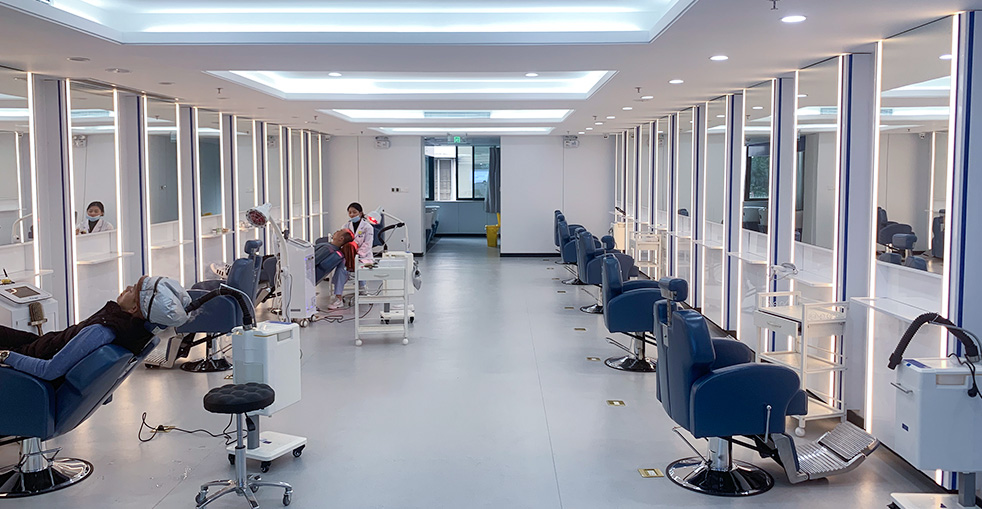
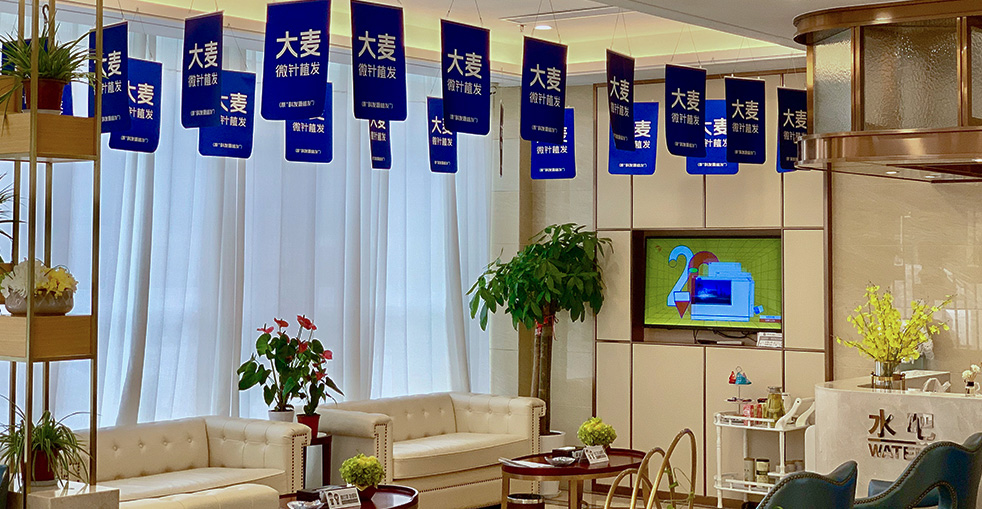
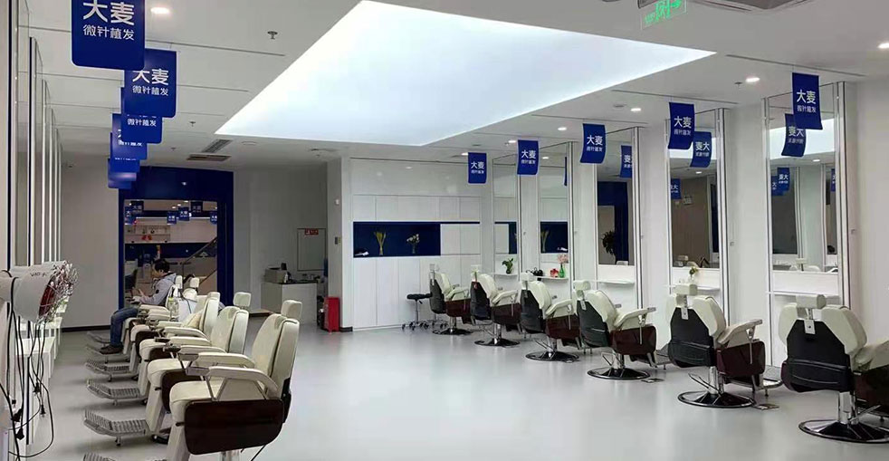

Baldness restoration is a comprehensive hair transplant approach designed for patients who have experienced extensive or complete hair loss across one or more areas of the scalp. Unlike targeted hairline corrections or density-boosting procedures, baldness restoration addresses larger treatment zones — often spanning from the hairline through the crown — and requires meticulous planning to achieve optimal coverage with the available donor supply.
This type of procedure is typically recommended for patients at Norwood Stage 5 through Stage 7, where the frontal region, mid-scalp, and crown have all been significantly affected. Our surgical team specializes in these complex cases and has developed refined protocols that maximize visual impact while working within the natural limitations of each patient's donor hair availability.
The key to successful baldness restoration lies in intelligent graft distribution. Rather than attempting to achieve maximum density across the entire scalp — which is rarely feasible with limited donor hair — our approach prioritizes overall coverage first and density second. We strategically allocate grafts to create a well-defined hairline, consistent mid-scalp coverage, and a filled-in crown area, ensuring the final result looks natural, balanced, and age-appropriate.
A visible band of thinning hair separates the frontal area from the crown, with both zones significantly affected. Typically requires 3,000— ,000 grafts for comprehensive restoration across all bald areas.
The bridge of hair between the front and crown has completely disappeared, forming one large continuous bald area. Usually requires 4,000— ,000 grafts for full coverage with strategic density distribution.
Only a narrow horseshoe-shaped band of hair remains along the sides and back of the scalp. Despite being the most advanced stage, we still achieve impressive results with 4,000— ,000+ grafts, typically across two sessions.
Complete hair loss at the crown while the front hairline may still be partially intact. Generally requires 2,000— ,500 grafts to restore a full, naturally dense-looking crown.
Priority 1 — Frame the Face: We begin by establishing a conservative, age-appropriate hairline. The frontal zone receives the highest graft density because it is the most visible area. A well-designed hairline instantly transforms your appearance and lays the foundation for a natural-looking result.
Priority 2 — Cover the Mid-Scalp: The area between the hairline and crown is treated with moderate-density grafts to create a seamless transition from front to back. We use a calculated distribution pattern that provides solid coverage while conserving grafts for the crown area.
Priority 3 — Restore the Crown: The crown (vertex) typically receives slightly lower density than the frontal zone because it is less visible in face-to-face interactions. This does not mean it looks thin — rather, it is carefully optimized for the best overall visual balance given your available donor supply.
Priority 4 — Plan for the Future: We always consider the long-term progression of your hair loss. By designing conservatively and preserving donor reserves, we ensure that additional procedures can be performed if needed and that your results will continue to look natural as you age.
Typically requires 3,000— ,000 grafts. Usually completed in a single extended session (8— 0 hours) for complete front-to-crown restoration.
Usually requires 4,000— ,000 grafts. May be performed as a single mega-session or split into two sessions for optimal graft survival and density.
Requires 4,000— ,000+ grafts depending on donor availability. Almost always performed in two sessions for the best possible outcome and highest graft survival rate.
2,000— ,500 grafts to restore a full crown. Can often be combined with front hairline refinement if additional coverage is desired.
Our surgical team has successfully treated thousands of Norwood Stage 5— patients, developing refined protocols that deliver consistent, natural-looking results — even in the most challenging situations with limited donor supply.
We apply a data-driven approach to distribute your available grafts across the treatment area for maximum visual impact. Every graft is carefully accounted for and placed exactly where it will make the greatest difference.
Our international patient coordinators communicate fluently in English, guiding you smoothly through every step — from initial consultation through surgery, recovery, and follow-up care.
Specialized treatment for Norwood Stage 5-7 cases with intelligent graft distribution

If you have been living with advanced baldness for years and assume that restoration is no longer an option, we invite you to reconsider. Our surgical team specializes in the most complex hair loss cases and has developed proven techniques that deliver outstanding results. We strategically distribute your available donor hair to achieve maximum coverage and a naturally dense appearance.
Intelligent graft allocation for each zone
Up to 6,000+ grafts in total
Staged procedures for optimal results
100,000+ successful procedures
From advanced baldness to a naturally full head of hair
Comprehensive evaluation of donor hair availability and graft capacity
Strategic graft allocation across all treatment zones
Follicle harvesting with 0.6mm precision microneedle FUE
Age-appropriate hairline crafted with highest-density grafts
Strategic implantation across mid-scalp and crown areas
Dedicated recovery support with 18-month growth tracking
Why thousands trust us with their most challenging cases
Advanced baldness cases require more than technical skill — they demand strategic thinking. Our surgeons approach each case like a chess match, carefully planning every step to achieve the best possible outcome with the donor resources available. This level of expertise comes from handling thousands of complex cases over nearly two decades of practice.
We do not simply transplant hair — we engineer results. By prioritizing the most visible areas and using carefully calculated density gradients, we create the appearance of fullness that far exceeds what the actual graft count would suggest. Patients are consistently surprised by how natural and complete their results look.
Every baldness restoration we perform is designed with the next 20 years in mind. We position your hairline at a mature, age-appropriate level, conserve donor reserves, and plan for potential future sessions. This forward-thinking approach ensures your results remain natural and proportionate throughout your life.
A globally recognized leader with nearly two decades of proven results
Pioneers in microneedle hair transplant technology since 2006, continuously refining techniques for superior outcomes
All directly operated with uniform, rigorous quality standards across every location
Proprietary microneedle and implant pen systems that deliver finer, more natural-looking results
Trusted by patients from over 60 countries who travel to China for exceptional results
End-to-end English support from your first inquiry through recovery and follow-up care
Hospital-grade facilities with strict sterilization protocols and comprehensive patient monitoring
See the transformations our baldness restoration patients have achieved


Moments of joy with our patients after their transformation

Celebrating with our medical team after a successful procedure

Delighted with outstanding results and our caring doctors

Another patient thrilled with their transformation

Patient with our specialist before heading home

Satisfied patient with Dr. Chen post-treatment

Excited patient showing off their new look

Patient delighted with their natural results

Patient starting fresh with renewed confidence
Hear from our satisfied patients around the world
I was a Norwood 6 with a completely bald crown and barely any hair on top. Barley did two sessions — 3,200 grafts in the first and 1,800 in the second. The strategic planning to cover the maximum area with my limited donor supply was brilliant. At 18 months after the second session, I have a full head of hair for the first time in 12 years!
I had been wearing a hairpiece for 8 years because my baldness was so advanced. The surgeons at Barley told me they could restore my hair with a mega session of 4,000 grafts plus a touch-up. The first surgery took 10 hours and I felt zero pain. Now, 15 months later, I threw my hairpiece in the bin. My colleagues thought I'd bought a new wig — they had no idea it was real!
At 52 years old with a Norwood 7 pattern, I thought it was impossible to get hair back. Barley used every available graft from my donor area — 3,500 in session one and 1,200 beard hair grafts in session two to fill the crown. The combination of scalp and beard hair worked perfectly. My grandchildren can't believe grandpa has hair again!
I was completely bald on top since my thirties and I'm now 47. Other clinics said my donor area was too weak for such extensive coverage. Barley proved them wrong with a creative approach — they harvested 2,800 scalp grafts and supplemented with 600 beard hair grafts. The beard hair in the crown area is actually perfect because it's thicker. Results at 14 months are beyond anything I expected.
As a Norwood 5 with a severely depleted donor area from a bad FUT strip surgery years ago, I thought I was out of options. Barley extracted 2,400 grafts using FUE from what little donor hair I had left and placed them strategically for maximum visual coverage. The fact they could work around my old strip scar and still deliver great results is remarkable. I finally feel confident again.
I had been bald since my late twenties and I'm now 44. The consultation was thorough — they measured my donor density, calculated available grafts, and gave me a realistic plan for two sessions. 3,000 grafts in session one covered the front and mid-scalp. 1,500 more in session two filled the crown. The English-speaking coordinator made travel from Oslo completely stress-free. Worth every krone!
Experience our modern and comfortable facilities

Our state-of-the-art facility

Relax in our premium lounge

Sterile and advanced

Private and professional

Comfortable post-op space

Welcoming entrance
Everything you need to know before starting your hair restoration journey
Click to copy contact information
15810155700
+86 13730143529
hairtransplant@qq.com

Everyone's hair loss journey and solution are unique due to a variety of factors. Our hair restoration experts will assist you in determining the root cause and the best solution for your hair restoration plan. If you have any questions, please ask; we are happy to assist.